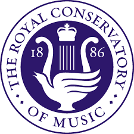

主页
线上线下课程
RCM 考级
加拿大皇家音乐学院RCM音乐考级
1. RCM 的基本介绍

成立时间：
1886年
总部：
加拿大多伦多
核心业务：
音乐教育与培训
认证考试体系（RCM Certificate Program）
音乐教师培训
音乐出版
现场演出和艺术推广
RCM 的影响力不仅限于加拿大，在美国等其他国家也有考点，尤其在培养青少年音乐能力和认证音乐水平方面起到重要作用。
2. RCM 证书与考试体系
级别划分
Preparatory A & B（预备级）
Level 1 - Level 10（正式分级，Level 10 接近音乐学院入学水平）
ARCT：高级文凭，相当于音乐专业人士或教师的资格认证
LRCM：最高级别，适用于专业表演者
考试科目
演奏（Practical Exam）：主修乐器或声乐，要求演奏指定曲目。
乐理（Theory）：从 Level 5 开始，乐理考试成为获得文凭的必需项。
音乐历史（History）：Level 9 及以上要求学习音乐历史。
和声 & 对位（Harmony & Counterpoint）：Level 9 及以上需要。
3. RCM 的优势
国际认可度高： RCM 证书在加拿大、美国乃至世界范围内被广泛认可，可用于申请音乐学院、大学，甚至部分奖学金。
结构化学习路径： 从儿童到成人，RCM 提供清晰的学习进阶路线，帮助音乐学生有目标地提升。
音乐教师资格认证： RCM 还为音乐教师提供教师证书（Teacher Certification），提高教学能力和行业竞争力。
支持不同音乐风格： 除了古典音乐，RCM 还开设爵士乐、流行音乐等课程，适应不同学习者的需求。
考点广泛： 全球多个国家和地区设有 RCM 考试中心，包括加拿大、美国、香港等地，方便国际考生参加考试。
5. RCM 与英国 ABRSM 的对比
机构
主要地区
级别体系
主要特点
RCM
加拿大、美国等
Preparatory - ARCT
更系统化，理论与实践结合，认可度高
ABRSM（英皇）
英国、亚洲、欧洲等
Grade 1 - Grade 8, DipABRSM, LRSM, FRSM
历史悠久，更强调技巧和音乐性
6. RCM 适合哪些人？
想要系统学习音乐的学生
计划申请北美音乐学院或大学的学生
需要考级认证作为音乐水平证明的学习者
想获得音乐教师资格的老师
计划在加拿大或美国发展音乐事业的人